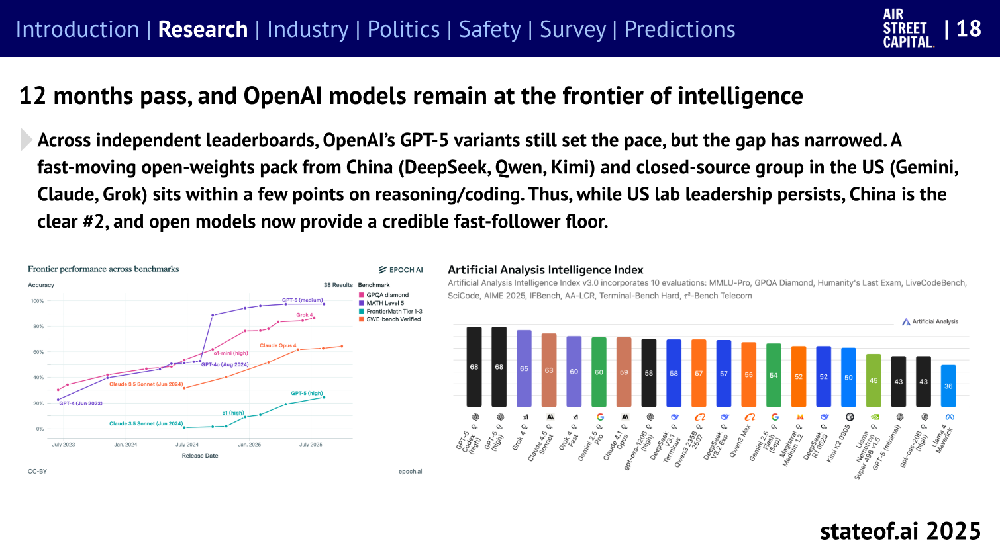
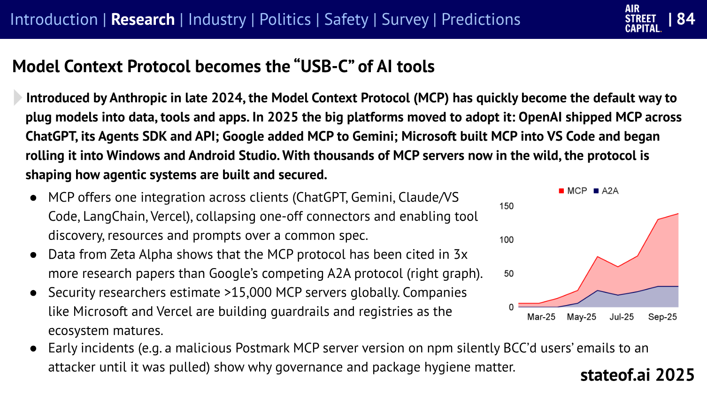
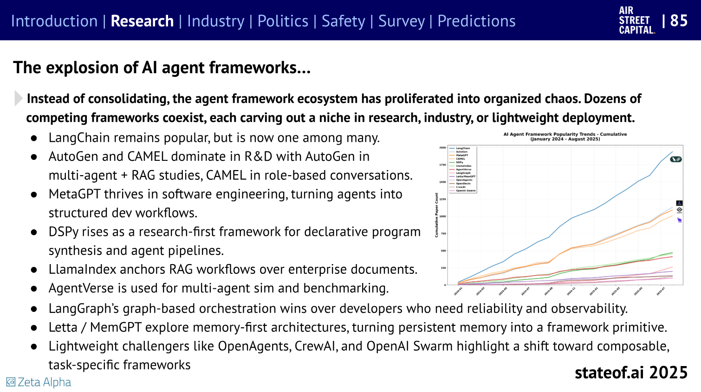
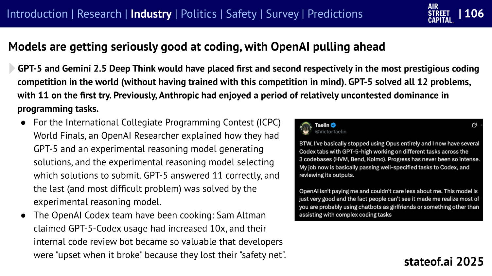
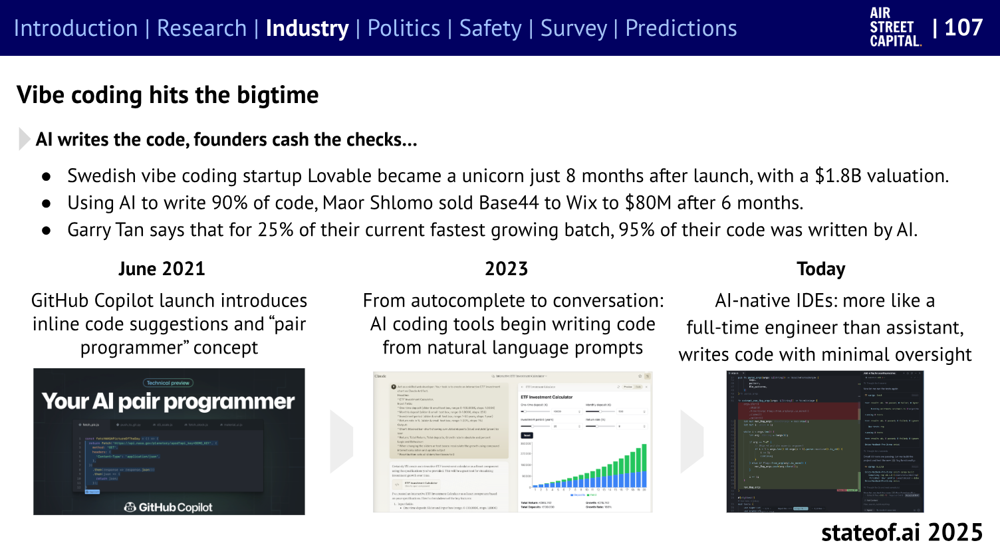
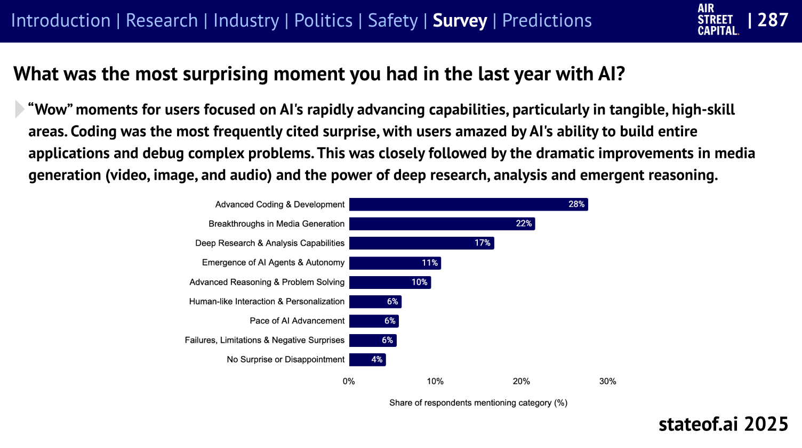
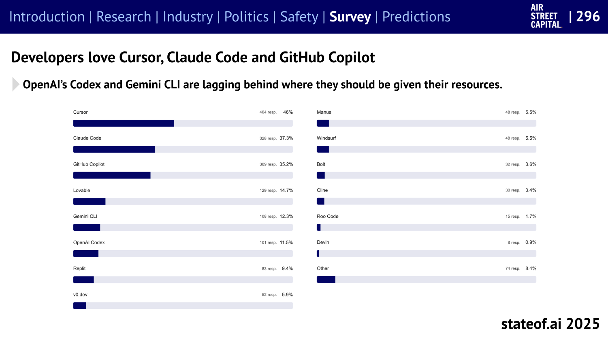
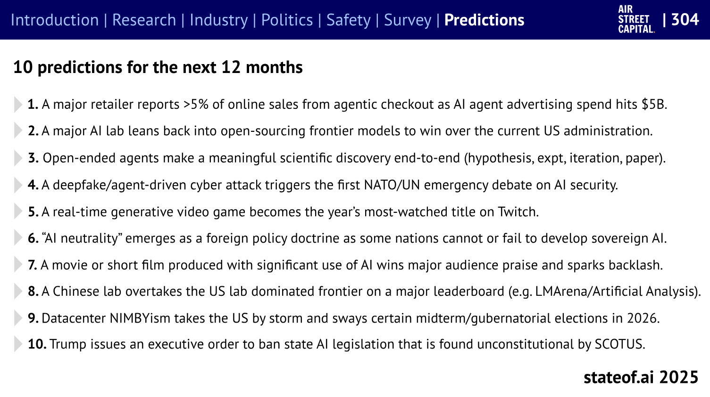

Wrap-up
Augmented Software Engineering Meetup
20-Nov-2025
roland@tritsch.email
What's new? What's happening?
What's new? What's happening? (1/8)
My take: GPT, Claude, Gemini, Grok, …, DeepSeek, Qwen, …

What's new? What's happening? (2/8)
My take: MCP on the way up … or out (agents, skills, …)

What's new? What's happening? (3/8)
My take: Langchain remains popular, but is now one of many

What's new? What's happening? (4/8)
My take: Sonnet remains popular, but is now one of many

What's new? What's happening? (5/8)
My take: Agentic-Coding is a thing (business, usage, …)

What's new? What's happening? (6/8)
My take: Coding, Media-Generation (Sora-Avatars), …

What's new? What's happening? (7/8)
My take: Claude-Code, Cursor, VSC/GHCP, …, Windsurf, …

What's new? What's happening? (8/8)
My take: 5 will become true. Which 5?

Thoughts/Feedback?
- Now or later?!?!
- More of the same?!?!
- Another one like this?!?!
Ask/Next!
- CFP!!!
- Sponsors!!!
- Co-Organizers!!!
- Thu., Jan. 22th, 18:00!!!
- Tables!!! Clean-Up!!!
Thank you!